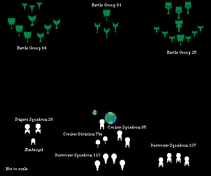

Battle Report
Every play under the command of a total fool? That pretty much sums up the Federation side of this battle. The author of this report was forced into playing the Federation side, because no one would work with the person who wanted to be the Federation commander. That was a mistake!

Klingons. The Klingon forces arrived slowly, and the first group to arrive waited until all of the battle groups were in position. They then advanced slowly toward the Star Fleet force.
The Klingon plan was to advance evenly, but when closing with the Federation force, to let the center battle group charge forward to break up the enemy formation. The flank battle groups would then engage as opportunities presented themselves.
Federation. The Star Fleet ships rushed forward, to gain a position in the center at the planet. The Oriskiny defined the location of the battle by placing its #3 shield next to the planet.
The Federation did not have a real "plan" (at least none was communicated the the #2 Federation player). What there was seems to have been; "Go up, get in position, and shoot at the enemy."
The battle was actually three almost separate fights; the left, the right, and the center.
The Left. On the left, two Austin class frigates and a Bader class scout faced off against a Klingon battle fleet, with orders to "Hold them back". Sure!
Fortunately, the Klingons did not plan to advance against that flank. The Austins began a game of hide-and-seek. As the Klingons locked onto an Austin, it would dive behind the moon to break the locks. The other would come out, engage the nearest enemy, and then dive back under cover. Later, the explosion of one of the Durretts was also used as a place to hide.
The striking part of this fight, was the sacrifice of the Tombaugh. Realizing it had no chance against any of the Klingon ships facing it, the Tonbaugh waited for the Klingons to concentrate on the Austins, and then charged. Putting all of its power into its engines, it raced directly for the Klingon flagship. And made it! All that was needed was a quick taunt to the Klingon ships, and BOOM, they blew it away. Unfortunately for their flagship, next to which the Tombaugh was sitting, the scout's warp engines took no damage during its destruction. So, they vented the energy from their warp core breeches into the enemy battleship. Also unfortunately for the flagship, it hadn't bothered to raise its rear shields. Within seconds most of its warp power was gone, as its warp engines absorbed serious damage.
By the time Battle Group 64 recovered from the explosion of the Tombaugh the remains of the Star Fleet force had left.
The Right. Destroyer Squadron 137 received the same orders as had been given to the left flank. With about the same response.
Seeing the enemy fleet slow significantly, the Bakers raised their front shields to maximum, charged their phases to full, and all began firing on one enemy destroyer. While doing only modest damage, this tactic kept them well away from the heavy disrupters of the Klingon battleship and cruiser. They followed this tactic for the entire battle.
Observing that the center was opposed by only four ships, the Federation commander sent the Bunker Hill and Emperador to help the right flank. The two cruisers apparently intended to use the planet to shield them from the bulk of the Klingon fleet while they engaged just the leading units. Unfortunately, the glorious commander failed to remember that they also had to be able to move faster than the Klingons for this tactic to work. Instead, the Klingons used the planet to shield them from the rest of the center while they destroyed the two cruisers.
The Center. The Oriskiny opened the battle by engaging the Daa'Huh at extreme range. The Klingons shifted to their left, to put the planet between themselves and the ships of the Federation center. They then increased speed, dropped shields, and charged.
Seeing the Klingons coming, the two Durretts moved forward past the moon and planet and reversed direction. The Lenthals set on their "sterns". The Oriskiny never moved. Within seconds all four Klingon ships were behind the Star Fleet center, with only the Durretts able to engage them effectively.
The Klingons locked on to the Oriskiny, fired, and destroyed her. The damage caused by the cruiser's explosion did more damage to the Klingon ships than did all the Federation weapons fire. The surviving Klingon ships kept up their speed, and raced for the other side of the planet. As they did, the Avro blew up, having been targeted by much of Battle Group 64.
The End. The loss of the Oriskiny was the last straw for the #2 Federation commander. The Austins, the surviving Durrett, and the four Bakers all warped out of the area without bothering to inform the remaining ships of the force. A few moments later, after having taken modest damage from the on rushing Klingons, the Lenthals also left the field.
| Star Fleet | Oriskiny | Exploded | ||
| Bunker Hill | Exploded | |||
| Emperador | Exploded | |||
| Avro | Exploded | |||
| Tombaugh | Exploded | |||
| Meredith | Heavy Damage | |||
| Baxter | Heavy Damage | |||
| All other units | Light Damage | |||
| Klingon Empire | Hero's Sword | Heavy Damage | ||
| All of Battle Group 64 | Light Damage | |||
| Poisonous Bite | Moderate Damage | |||
| Daa' Huh | Heavy Damage | |||
| Dust Storm | Heavy Damage | |||
| Burning Hail | Exploded | |||
| Blizzard | Heavy Damage |
Quite simply, it was a battle between players who knew what they were doing, and someone who, despite having played quite a bit, didn't have a clue.
The Klingons worked against the known incompetence of the Federation commander. His only tactics were; 1) rush forward, 2) drop to minimum speed (3), 3) charge all weapons to their maximum, 4) raise whatever forward shields could be powered, and 5) shoot at the nearest enemy.
The commander of Battle Group 81, knowing that he faced the only Enterprise Mark V ever created, had declared that he was going to destroy it. By risking destruction himself, he accomplished his self declared objective (and had three of his four ships survive the effort).
The rest of the Klingons were just along for the ride. Once Battle Group 81 had done its work, they would come in and bludgeon the Star Fleet ships into submission. Only the disgust of the #2 Federation commander with the hopelessness of the situation saved the fleet from suffering this fate.